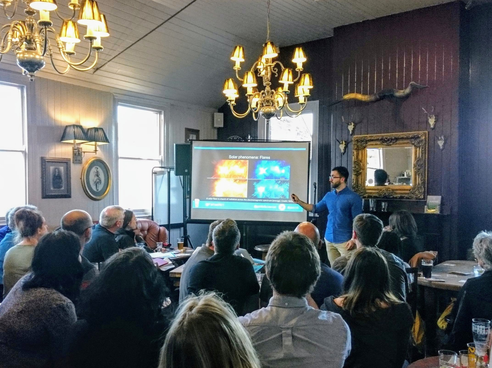

About
"I, a Universe of atoms, an atom in the Universe." - Richard P. Feynman
I am currently a doctoral researcher in Solar Physics within the School of Mathematics and Statistics at The University of Sheffield, funded by the Science and Technology Facilities Council (STFC).
Solar physics is a branch of astrophysics that focuses on our parent star, the Sun. As part of the Plasma Dynamics Group, my main research efforts are focused towards understanding how ubiqituous magnetohydrodynamic waves can heat the solar atmosphere. Prior to my research, I received a Master in Science in Physics with Astrophysics from the University of Glasgow.

Résumé
Work Experience
Researcher
Oct 2017 - Present
The University of Sheffield
I am currently working towards my Ph.D in Solar Physics. Particularly, my main duties consist of research and teaching.
-Research: Plasma Physics, Magnetohydrodynamics, Solar Physics, Applied Mathematics, Signal Processing, Image Processing and Image Analysis.
-Teaching: Vectors and Mechanics, Complex Analysis and Multivariable Calculus. Foundation level Mathematics and Physics: Wave Phenomena, Circuits and Systems, Electromagnetism and Quantum Mechanics.
Education
Ph.D Solar Physics
Oct 2017 - Present
The University of Sheffield
-Supervisor: Dr. Rekha Jain.
M.Sci Physics with Astrophysics - First Class
Sep 2012 - Jul 2017
University of Glasgow
-Dissertation: An Analysis of Type III Solar Radio Bursts.
-Supervisor: Dr. Hamish Reid.
Conferences, Seminars and Workshops
| Event |
Locale |
Date |
Contribution |
|
| STFC Advanced Solar, Solar-Terrestrial and Solar-Planetary Physics Summer School |
University of Southampton, Southampton, UK |
09/09/18-14/09/18 |
Presentation |
| BUKS - Waves and Instabilities in the Solar Atmosphere |
Instituto de Astrofísica de Canarias, La Laguna, Tenerife, Spain |
03/09/18-07/09/18 |
Poster |
| STFC Solar System Plasma Physics Summer School |
Northumbria University, Newcastle Upon Tyne, UK |
10/09/17-17/09/17 |
None |
Public Outreach
| Event |
Locale |
Date |
Contribution |
|
| Pint of Science - Reaching for the Stars |
Hallamshire House, Sheffield, UK |
16/05/18 |
Presentation, Blog |
| PubhD - Can you explain your research in the pub? |
Old Queen's Head, Sheffield, UK |
03/04/18 |
Presentation, Blog |
Programming Skills
Python MATLAB LaTeX Unix/Bash Shell HTML/CSS HPC
Interests
In my spare time, I enjoy weightlifting, bouldering, cooking, painting and playing the piano & guitar. Follow my social media accounts for updates!
Blog
Here I want to keep somewhat of a journal as I traverse my Ph.D; from things I feel most passionate about to general thoughts, with the hope that the reader leaves this page with some insight, or even interest, into something new. Check back soon!
Contact
Contact Details
- Farhad Allian
- fallian1@sheffield.ac.uk
- Room H23, Hicks Building
- School of Mathematics & Statistics
- P.O. Box S3 7RH, 226 Hounsfield Rd, Sheffield, United Kingdom
If you have queries, please get in touch. Of course, feedback is always appreciated.